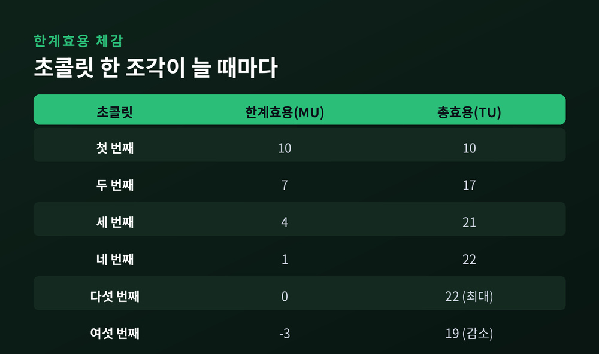

이번 글에서는 한계효용 체감의 법칙을 정리해 보겠습니다.
첫 조각의 초콜릿은 입안에서 녹아내립니다. 그런데 세 번째, 네 번째 조각에 이르면 그 단맛이 예전 같지 않습니다. 같은 초콜릿인데 왜 만족은 줄어드는 것일까요. 이 사소한 경험 안에 경제학의 오래된 원리 하나가 숨어 있습니다.
경제학에서 효용(utility)은 소비자가 무언가를 소비하며 얻는 주관적 만족을 뜻합니다. 크기를 정확히 잴 수는 없지만, 만족의 정도라고 생각하면 됩니다.
여기서 두 가지를 구분해야 합니다.
'한계(marginal)'라는 말이 어렵게 들리지만, 뜻은 단순합니다. 마지막 한 단위, 즉 '하나 더'가 주는 몫을 가리킵니다. 첫 조각의 한계효용, 두 번째 조각의 한계효용은 각각 따로 존재합니다.
핵심 원리는 이렇습니다. 같은 재화를 계속 소비할수록, 추가 한 단위가 주는 한계효용은 점점 작아집니다. 이것이 한계효용 체감의 법칙입니다.
배고플 때 먹는 첫 조각의 만족은 큽니다. 두 번째는 그만 못하고, 다섯 번째쯤이면 감흥이 거의 사라집니다. 뷔페에서 첫 접시가 가장 맛있고 접시를 거듭할수록 시들해지는 것도 같은 이유입니다.
이 법칙은 독일 경제학자 헤르만 하인리히 고센의 이름을 따 '고센의 제1법칙'이라고도 불립니다.

여기서 흔한 오해 하나를 짚겠습니다. 한계효용이 줄어든다고 해서 총효용까지 줄어드는 것은 아닙니다.
한계효용이 여전히 양(+)인 동안에는, 한 조각을 더 먹을 때마다 총효용은 계속 쌓입니다. 다만 쌓이는 속도가 느려질 뿐입니다.
숫자로 그려 보면 감이 옵니다. 첫 조각의 만족을 10이라 하면, 총효용도 10입니다. 두 번째 조각의 만족이 7이면 총효용은 17로 늘지만, 늘어난 폭은 10에서 7로 줄었습니다. 세 번째가 4, 네 번째가 1이라면 총효용은 21, 22로 계속 오릅니다. 다만 오르는 걸음이 눈에 띄게 느려집니다. (위 숫자는 원리를 보여주기 위한 예시입니다.)
예전엔 한 조각당 만족이 컸습니다. 지금은 같은 한 조각이 주는 몫이 작습니다. 그래서 그래프로 그리면 총효용 곡선은 위로 오르다 점점 완만해지고, 한계효용 곡선은 오른쪽 아래로 흐릅니다.
그러다 한계효용이 0이 되는 지점에서 총효용은 최대가 됩니다. 그 이상 먹으면 오히려 물려서 만족이 깎이기 시작합니다. 한계효용이 음(-)으로 돌아서는 순간입니다. 무제한 뷔페가 성립하는 것도 이 때문입니다. 사람은 한계효용이 바닥에 닿으면 스스로 수저를 놓기 마련입니다.
이 원리는 경제학의 오랜 수수께끼 하나를 풀어냅니다. 바로 가치의 역설입니다.
애덤 스미스는 1776년 『국부론』에서 이상한 점을 지적했습니다. 물은 생존에 반드시 필요한데 값이 헐값입니다. 다이아몬드는 없어도 사는 데 지장이 없는데 값이 어마어마합니다. 쓸모와 가격이 정반대로 놓인 셈입니다.
스미스 자신은 답을 내지 못했습니다. 약 100년 뒤, 한계효용학파가 매듭을 풀었습니다.
답은 '마지막 한 단위'에 있었습니다. 가격을 정하는 것은 총효용이 아니라 한계효용입니다. 물은 흔해서 마지막 한 잔의 한계효용이 아주 작습니다. 그래서 값이 쌉니다. 다이아몬드는 희소해서 마지막 한 개의 한계효용이 큽니다. 그래서 값이 비쌉니다.
정리하면 이렇습니다. "가격은 유용함의 총량이 아니라, 희소성이 만든 마지막 한 단위의 만족이 결정한다."
한정된 돈으로 여러 가지를 사야 할 때, 어떻게 나눠야 만족이 가장 클까요.
경제학의 답은 한계효용 균등의 법칙입니다. 각 재화에 쓴 1원당 한계효용이 모두 같아질 때, 총효용이 최대가 됩니다. 고센의 제2법칙이라고도 합니다.
식으로 쓰면 이렇습니다. MUₓ/Pₓ = MUᵧ/Pᵧ. 즉 재화의 한계효용을 그 가격으로 나눈 값이 서로 같아지는 지점입니다.
직관은 간단합니다. 커피에 쓴 1원의 만족이 빵에 쓴 1원의 만족보다 크다면, 커피를 조금 더 사고 빵을 조금 줄이면 같은 돈으로 더 큰 만족을 얻습니다. 이 조정이 끝나 두 재화의 1원당 만족이 같아진 상태가 소비자 균형입니다.
한계효용 체감은 우리가 익히 아는 수요곡선의 모양도 설명합니다.
합리적인 소비자는 한 단위가 주는 한계효용이 그 값보다 클 때 삽니다. 그런데 이미 여러 개를 산 상태에서 하나를 더 사려면, 낮아진 한계효용에 걸맞게 가격도 내려가야 합니다.
그래서 '값이 내려갈수록 더 산다'는 관계가 생깁니다. 수요곡선이 오른쪽 아래로 향하는 미시적 뿌리가 바로 한계효용 체감인 셈입니다.
덧붙이면, 지불할 뜻이 있던 금액과 실제로 낸 값의 차이를 소비자잉여라 부릅니다. 첫 단위일수록 한계효용이 크니, 그만큼 소비자잉여도 큽니다.
이 생각은 1870년대에 경제학의 지형을 바꿔 놓았습니다. 이른바 한계혁명입니다.
영국의 제번스(1871), 오스트리아의 멩거(1871), 프랑스·스위스의 발라스(1874)가 거의 동시에, 서로 모른 채 같은 착상에 다다랐습니다.
그전까지 가치는 물건에 들어간 노동과 생산비가 정한다고 여겨졌습니다. 세 사람은 여기서 방향을 틀었습니다. 가치는 소비자가 마지막 한 단위를 소비하며 느끼는 주관적 만족, 곧 한계효용이 정한다고 본 것입니다.
사실 고센은 이보다 앞선 1854년에 비슷한 착상을 먼저 내놓았습니다. 다만 당대에는 주목받지 못했고, 한계혁명기에 이르러 재발견되었습니다. 세 사람의 결론은 이후 각각 오스트리아학파와 로잔학파로 이어지며 하나의 큰 흐름을 이룹니다.
이 전환이 오늘날 신고전파 경제학의 초석이 되었습니다.
한계효용 체감은 초콜릿에만 있지 않습니다. 우리 삶 곳곳에 스며 있습니다.
소득도 마찬가지입니다. 같은 1만 원이라도 형편이 넉넉한 사람에게는 그 만족이 작고, 빠듯한 사람에게는 큽니다. 소득이 늘수록 추가 1만 원의 한계효용은 줄어듭니다. 누진세와 소득재분배를 이야기할 때 이 원리가 자주 인용됩니다.
"많이 가질수록 더 행복할까"라는 물음에도 이 법칙은 조용히 답합니다. 만족의 총량은 늘 수 있습니다. 다만 하나를 더 가질 때의 감동은 점점 옅어집니다.
정리하면 이렇습니다.
첫 조각이 특별한 이유는 초콜릿이 달라서가 아닙니다. 그 조각이 '첫 번째'였기 때문입니다. 무언가를 처음 가질 때의 크기를, 우리는 자주 당연하게 여깁니다.
두 번째가 첫 번째만 못하다고 느끼신다면, 그것은 입맛이 변한 것이 아니라 한계효용이 정직하게 줄어든 것입니다. 그렇다면 오늘의 첫 한 조각을, 조금 더 음미해 보시길 권합니다.